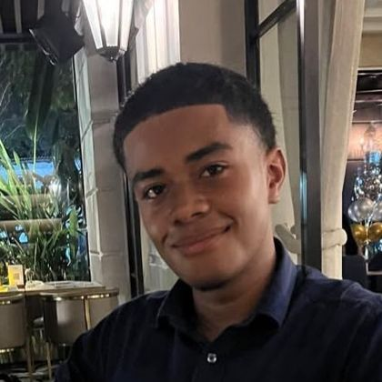

Anthony Silva Alarcón
Estudiante de Ingeniería de Sistemas en Barranquilla
Me gusta programar en Java y C++
Me gusta enseñar y resolver problemas con código. Hablo inglés a nivel B2, coordino eventos y dirijo grupos frente a público.

Sobre mí
Soy estudiante de Ingeniería de Sistemas en la Universidad Libre y, al mismo tiempo, curso el Programa de Lenguas Extranjeras en la Universidad del Atlántico.
Me gradué como bachiller con profundización en pedagogía en la Escuela Normal Superior La Hacienda, donde fui asistente pedagógico y coordiné eventos institucionales. Allí aprendí a explicar con paciencia, a planificar con orden y a mantener la calma cuando algo sale distinto de lo previsto.
Ahora quiero llevar esa forma de trabajar a la tecnología: construir soluciones útiles, en equipo y con buena comunicación.
Experiencia
Asistente pedagógico (estudiante maestro)
2024 a 2025Escuela Normal Superior La Hacienda- Lideré actividades lúdicas y pedagógicas para estudiantes de básica primaria, asegurando la participación y la comprensión del grupo.
- Planifiqué y estructuré clases temáticas, coordinando materiales y tiempos para cumplir los objetivos de cada día.
- Impartí clases frente a grupos, asumiendo el rol de docente para ejecutar los planes de estudio y garantizar el aprendizaje.
Colaborador y coordinador de eventos
2023 a 2025Escuela Normal Superior La Hacienda- Coordiné la logística y la planeación de ferias estudiantiles y eventos sociales y culturales, cuidando el orden en cada uno.
- Dirigí y apoyé competencias bilingües de Spelling Bee, manejando dinámicas frente a audiencias y grupos de estudiantes.
- Gestioné registros y turnos de participación, y trabajé de cerca con el equipo organizador para que todo saliera bien.
Habilidades
Lenguajes de programación
- Java (POO)
- C++
- Python
- HTML
- CSS
- JavaScript (nociones)
Herramientas
- Visual Studio Code
- Microsoft Office
- AutoCAD 2D y 3D
- Logisim
Datos
Fundamentos y sistemas de gestión de bases de datos relacionales.
Habilidades personales
- Liderazgo
- Organización
- Resolución de problemas
- Adaptabilidad
- Trabajo en equipo
Formación y logros
Educación
- Ingeniería de SistemasUniversidad Libre, Barranquilla. Desde febrero de 2026
- Programa de Lenguas Extranjeras, inglés avanzadoUniversidad del Atlántico, Barranquilla. Desde febrero de 2025
- Bachiller, profundización en pedagogíaEscuela Normal Superior La Hacienda. Noviembre de 2025
Certificaciones y reconocimientos
- Bases de Datos: generalidades y sistemas de gestión (48 h)SENA, 2026
- Estructura del lenguaje de programación C++, nivel I (40 h)SENA, 2026
- Habilidades digitales y sociocupacionales+Educación + Innovación, noviembre de 2025
- Programación y desarrollo de softwareGeneración Creativa, mayo de 2022
- Menciones de honor en 9.°, 10.° y 11.°Participación destacada en Spelling Bee y EcoRally
Hablemos
Estoy buscando una oportunidad laboral donde pueda aportar y seguir aprendiendo. Si tienes una vacante o quieres conocerme mejor, escríbeme. Soy de Barranquilla, Colombia.
silvaanthonya16@gmail.com